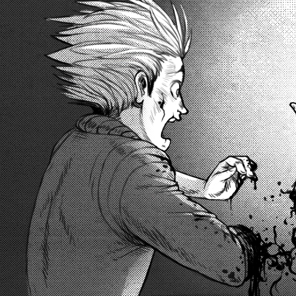
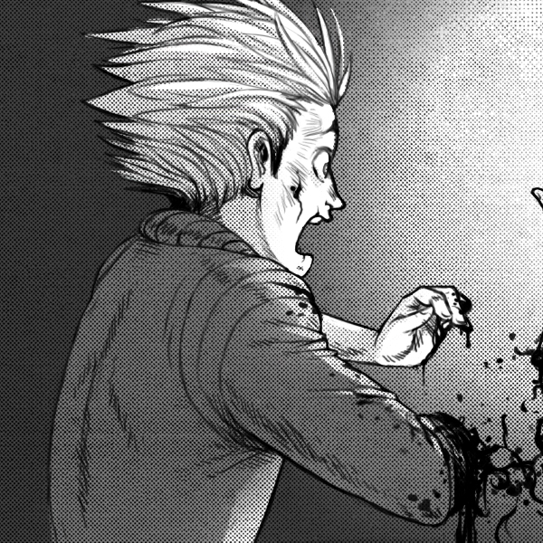
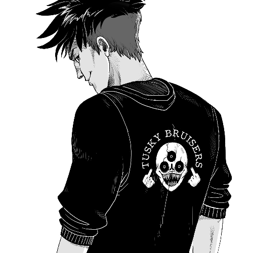
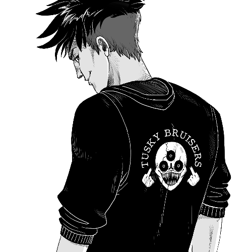

What is Circa
Circa is a comic, drawn by hand and published online.
A tale of ancient demons and monkeywrenching.
What to say about Circa? It's about the city of Montore, and humans encroaching on nature, and on the descendants of an ancient race (Hegatas) who fight back. The story is a dark comedy, and follows two gangs: The Solomon's Devils (solo devs) and the Ars Goetia. Both have similar visions of the future, but bicker on how to best build/destroy the road to get there.
The characters of Circa have been part of my life for a long, long time now. I've re-used them in a variety of projects, all personal, and this is another iteration. I will forever love getting lost in their world. I wrote a short featuring Sy and Token called Go North. Also, see some old art.
 

 
